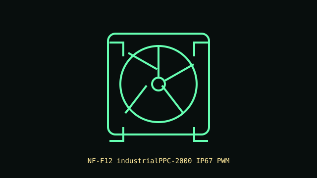

[ IDENTIFIED SKU // NF-F12 industrialPPC-2000 IP67 PWM ]
Noctua NF-F12 industrialPPC-2000 IP67 PWM
IP67-sealed 120 mm industrial PWM model with the 2000 RPM rating, not the unsealed sibling.

Recorded specifications
| Exact part | NF-F12 industrialPPC-2000 IP67 PWM |
|---|---|
| Frame / thickness | 120 × 120 × 25 mm |
| Speed / airflow / pressure / noise | 450–2000 RPM; up to 121.8 m³/h; 3.94 mm H₂O maximum static pressure; 29.7 dB(A). |
| Bearing | SSO2 self-stabilizing oil-pressure bearing |
| Electrical / control | 12 V DC; 0.10 A maximum input current; 4-pin PWM connector. |
| Case / radiator compatibility | Standard 120 mm frame and 25 mm depth. Check mount and screw length at the case/radiator. The IP67 rating applies to this fan construction, not the PC, cable connection or fan header. |
Installation notes
Install only where the host and connection remain within their own ingress-protection ratings. Verify the PWM header current budget and airflow direction before powering.
Manufacturer sources
- Noctua product page — NF-F12 industrialPPC-2000 IP67 PWMExact sealed product identification and fan specifications.
- Noctua technical data sheet — NF-F12 industrialPPC-2000 IP67 PWMManufacturer datasheet for the IP67 model.